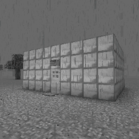
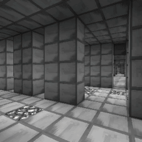
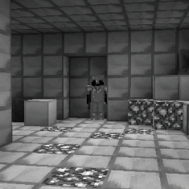
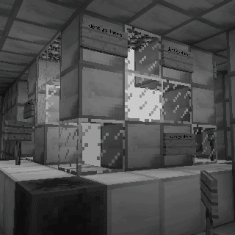

"LEAVE"
- richyDUDE2001




Vault is a dangerous, Labyrinthine type Layer 1 dimension accessible from Wonderland[D]. The entrance is a hollow box structure made out of diamonds labeled "richyDUDE2001's house", inside is the portal leading here. It is both filled and entirely made out of valuable gemstones. These stones being; diamond, emerald, lapis lazuli, glowstone, iron, gold and redstone.
However these ores are, in truth, illusions.
While it possible to obtain them, trying to gather any sort of usable resources from them will only yield undesirable waste items like common dirt, ripped out eyes of spiders and decaying flesh tissue.
Though they can still be used as decoration if one wishes so. These ores are also misspelt, having one or more letters shifted in their names.
The corridors of this dimension are fairly narrow, which can make navigation difficult. It may sometimes be faster or more convenient to break the walls through with a pickaxe, but keep in mind multi-block thick walls are common here.
While navigating, be at alert at all times. There is only a single entity residing here, however there is no known way to avoid it. Making it one of the more dangerous encounters. It is an entrapped player by the name of "richyDUDE2001". It considers the Vault it's home and is extremely hostile towards anyone inside of it.
It will stalk any intruders for a short while, before eventually deciding to strike. It is fast and relentless, which combined with the tight corridors can make fleeing very challenging. It will also break any blocks hindering it's path. Fortunately, it is not the only method of survival.
The entity has as much health as a regular player, which is not a whole lot. Being 20 points. With decent fighting skills and a good weapon, it is possible to slay it. This will prove a challenge of it's own, though. The entity brandishes an entire kit of diamond gear.
If one has their sights on triumphing it, an armor set of their own and a shield is recommended. Note that the entity will not drop any loot upon defeating it, and it will only temporarily be absent. Once it respawns, it will go back to it's stalking behaviour. Giving time before attempting an assault once more.
In order to exit, find a glass vault containing a white portal inside. Chances are it will be surrounded by signs resenting it. Thought to be put by richyDUDE2001. Entering the portal will take you back to Wonderland[D]. While there isn't a lot of reasons to intentionally come here, it can be a good source of potion materials. Especially spider eyes. The risk-reward is debatable, however.
Threat level: 2
Layer: 1
Name: Vault
Type: Labyrinthine